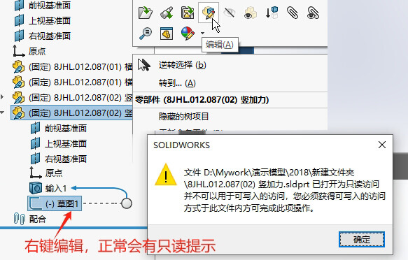
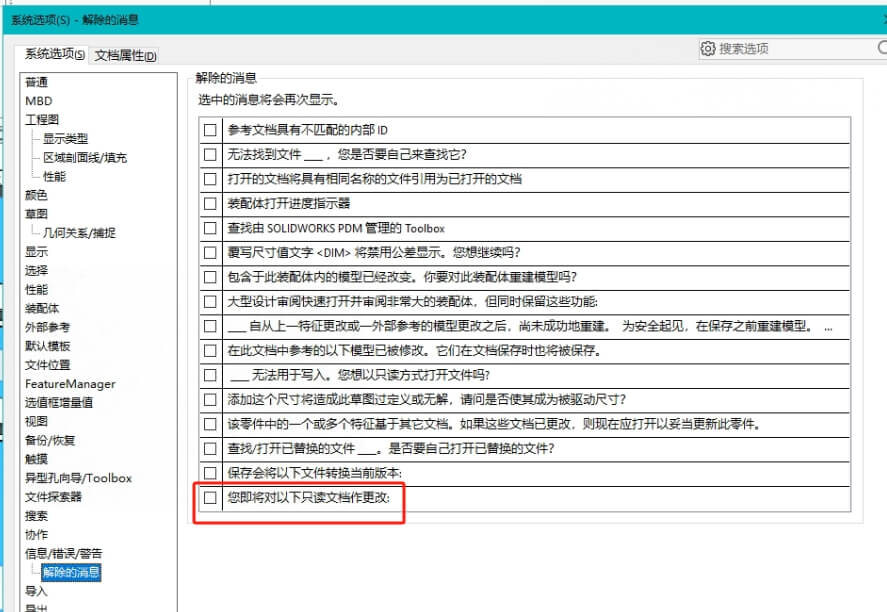
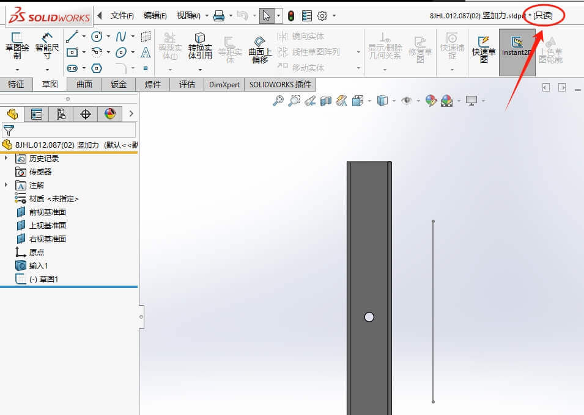
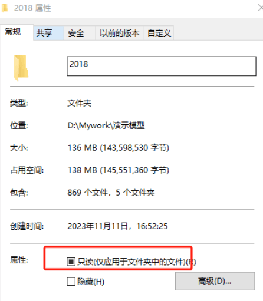
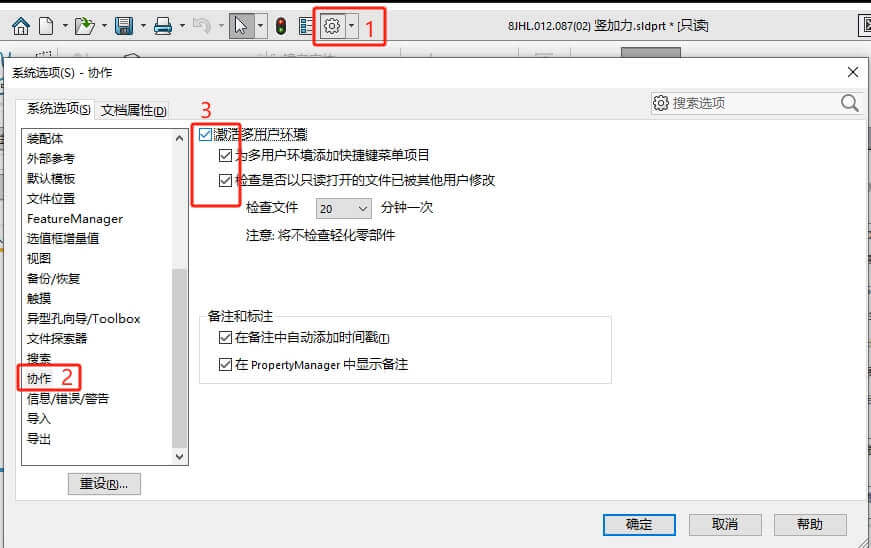
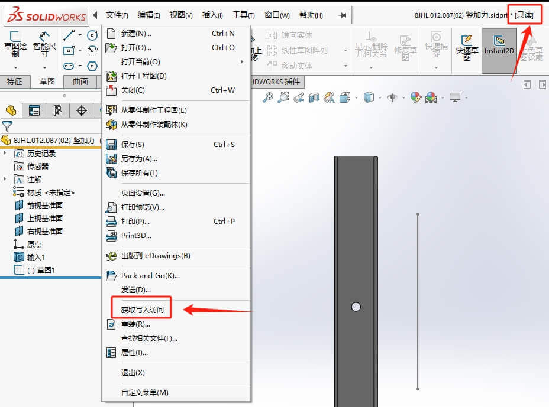
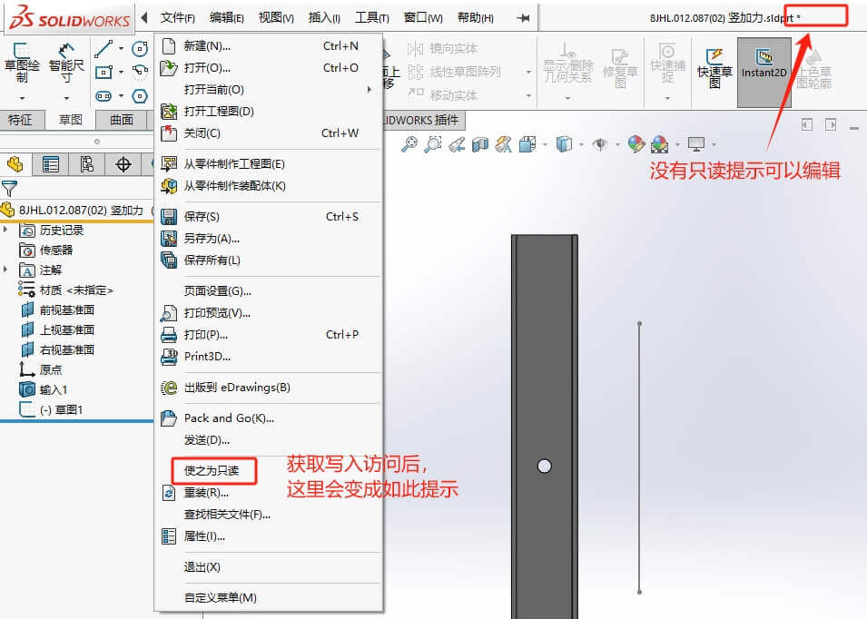
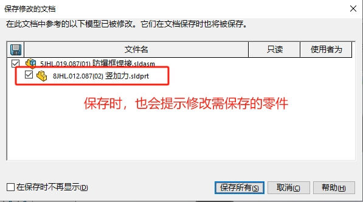
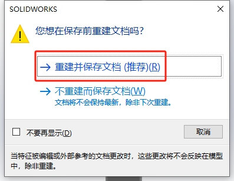

编辑零部件出现只读情况
在装配体界面中，我们可以通过零部件【右键-编辑】来修改设计，但如果模型文件是只读属性，那在编辑时会出现如下弹窗提示：“文件XXX已打开为只读访问并不可以用于可写入的访问，您必须获得可写入的访问方式于此文件内方可完成此项操作。”
恢复只读提示
如果没有弹窗的话，你可能需要检查下：是不是被点了不再提示。
确定弹窗后，进入到零件界面下的文件名称也会有“[只读]”的标识。
设置只读/写入
正常情况下，我们可以检查当前文件夹的当前零件的属性。大概率是文件设置了“只读”的属性。需将其取消勾选，恢复写入访问权限。
如果文件是在打开状态下，修改的文件只读属性，那你还需要在【系统选项-协作】勾选激活多用户环境。
激活后，你便可以在文件打开的模式下修改写入权限。在菜单栏【文件-获取写入访问】
获取写入访问后，文件名称的”[只读]”就会消失，然后“获取写入访问”位置会变成“使之为只读”。
保存所有
在编辑修改“可写入”的零件时，在保存时会提示“保存所有”。如果修改了“只读”零件时，保存会在零件后标记“[只读]”，并且会已【另存为】的方式保存。
注意：这里的【另存为】是会修改装配体的零部件参考的，会参考到另存为的零件。
 其他
您可以使用只读访问权限打开文件，以防止意外更改文件。只读访问权限可以在 SOLIDWORKS® 或 Windows 中进行设置。每种权限都以不同的方式提供保护。
SOLIDWORKS 只读
访问权限实际上并不会阻止随同更改保存文件。只有在实际覆盖文件之前才需要确认。
Windows 只读
文件可以通过其 Windows 属性设置为只读。在 Windows 中将文件属性设置为只读会阻止文件被覆盖。